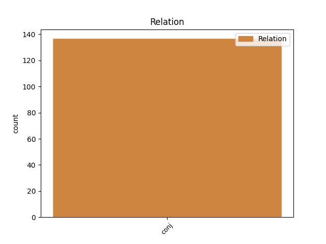
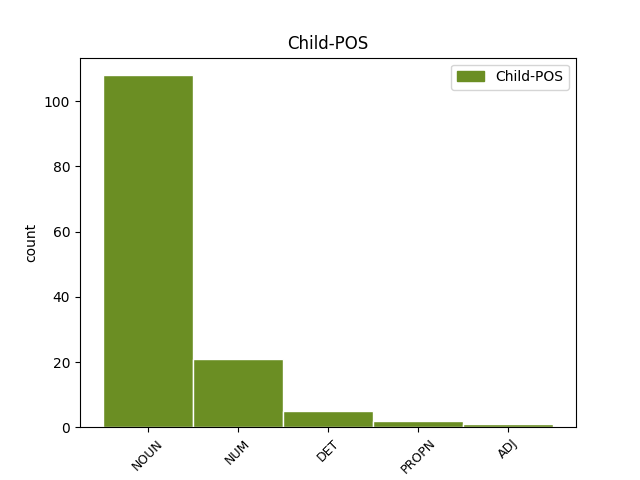

Distribution of features within this leaf


Agreement Rules sorted by frequency.
- When the dependent token is the conjunct(conj) of the head token, and the head token is NOUN and the dependent token is NOUN.
1 od _ _ _ _ 0 _ _ _
2 fructala _ _ _ _ 0 _ _ _
3 voda _ _ _ _ 0 _ _ _
4 samo _ _ _ _ 0 _ _ _
5 da _ _ _ _ 0 _ _ _
6 pač _ _ _ _ 0 _ _ _
7 eee _ _ _ _ 0 _ _ _
8 z _ _ _ _ 0 _ _ _
9 okusom _ _ _ _ 0 _ _ _
10 ampak _ _ _ _ 0 _ _ _
11 da _ _ _ _ 0 _ _ _
12 ni _ _ _ _ 0 _ _ _
13 nič _ _ _ _ 0 _ _ _
14 drugega _ _ _ _ 0 _ _ _
15 kakor _ _ _ _ 0 _ _ _
16 sama _ _ _ _ 0 _ _ _
17 voda voda NOUN Ncfsn Case=Nom|Gender=Fem|Number=Sing 0 _ _ _
18 pa _ _ _ _ 0 _ _ _
19 sadje sadje NOUN Ncnsn Case=Nom|Gender=Neut|Number=Sing 17 conj _ msd=Sosei|word=sadje
1 dobro _ _ _ _ 0 _ _ _
2 saj _ _ _ _ 0 _ _ _
3 zdaj _ _ _ _ 0 _ _ _
4 vznožje _ _ _ _ 0 _ _ _
5 ali _ _ _ _ 0 _ _ _
6 če _ _ _ _ 0 _ _ _
7 je _ _ _ _ 0 _ _ _
8 to _ _ _ _ 0 _ _ _
9 dvesto _ _ _ _ 0 _ _ _
10 tristo tristo NUM Mlc-pn Case=Nom|Number=Plur|NumForm=Word|NumType=Card 0 _ _ _
11 petsto petsto NUM Mlc-pn Case=Nom|Number=Plur|NumForm=Word|NumType=Card 10 conj _ msd=Kbg-mi|word=petsto
12 metrov _ _ _ _ 0 _ _ _
13 nadmorske _ _ _ _ 0 _ _ _
14 višine _ _ _ _ 0 _ _ _
15 to _ _ _ _ 0 _ _ _
16 ne _ _ _ _ 0 _ _ _
17 bo _ _ _ _ 0 _ _ _
18 šel _ _ _ _ 0 _ _ _
19 zdaj _ _ _ _ 0 _ _ _
20 nobeden _ _ _ _ 0 _ _ _
21 preverjat _ _ _ _ 0 _ _ _
22 [audience:laughter] _ _ _ _ 0 _ _ _
23 v _ _ _ _ 0 _ _ _
24 naših _ _ _ _ 0 _ _ _
25 koncih _ _ _ _ 0 _ _ _
26 ne _ _ _ _ 0 _ _ _
1 pol _ _ _ _ 0 _ _ _
2 pa _ _ _ _ 0 _ _ _
3 v _ _ _ _ 0 _ _ _
4 oklepaju _ _ _ _ 0 _ _ _
5 piše _ _ _ _ 0 _ _ _
6 le _ _ _ _ 0 _ _ _
7 za _ _ _ _ 0 _ _ _
8 ta _ _ _ _ 0 _ _ _
9 to ta DET Pd-fsa Case=Acc|Gender=Fem|Number=Sing|PronType=Dem 0 _ _ _
10 pa _ _ _ _ 0 _ _ _
11 to ta DET Pd-fsa Case=Acc|Gender=Fem|Number=Sing|PronType=Dem 9 conj _ msd=Zk-zet|word=to
12 vizo _ _ _ _ 0 _ _ _
13 lahko _ _ _ _ 0 _ _ _
14 trideset _ _ _ _ 0 _ _ _
15 dni _ _ _ _ 0 _ _ _
16 ostaneš _ _ _ _ 0 _ _ _
1 eee _ _ _ _ 0 _ _ _
2 televizijska _ _ _ _ 0 _ _ _
3 postaja postaja NOUN Ncfsn Case=Nom|Gender=Fem|Number=Sing 0 _ _ _
4 hezbolah _ _ _ _ 0 _ _ _
5 ki _ _ _ _ 0 _ _ _
6 obširno _ _ _ _ 0 _ _ _
7 o _ _ _ _ 0 _ _ _
8 tem _ _ _ _ 0 _ _ _
9 poroča _ _ _ _ 0 _ _ _
10 al Al PROPN Npmsn Case=Nom|Gender=Masc|Number=Sing 3 conj _ msd=Slmei|word=Al
11 džazira _ _ _ _ 0 _ _ _
12 torej _ _ _ _ 0 _ _ _
13 arabski _ _ _ _ 0 _ _ _
14 mediji _ _ _ _ 0 _ _ _
15 so _ _ _ _ 0 _ _ _
16 zelo _ _ _ _ 0 _ _ _
17 dejavni _ _ _ _ 0 _ _ _
18 jih _ _ _ _ 0 _ _ _
19 spremljamo _ _ _ _ 0 _ _ _
20 in _ _ _ _ 0 _ _ _
21 tako _ _ _ _ 0 _ _ _
22 dobivamo _ _ _ _ 0 _ _ _
23 tudi _ _ _ _ 0 _ _ _
24 informacije _ _ _ _ 0 _ _ _
25 z _ _ _ _ 0 _ _ _
26 druge _ _ _ _ 0 _ _ _
27 strani _ _ _ _ 0 _ _ _
28 čeprav _ _ _ _ 0 _ _ _
29 ne _ _ _ _ 0 _ _ _
30 s _ _ _ _ 0 _ _ _
31 prve _ _ _ _ 0 _ _ _
32 roke _ _ _ _ 0 _ _ _
1 eee _ _ _ _ 0 _ _ _
2 pet pet NUM Mlc-pa Case=Acc|Number=Plur|NumForm=Word|NumType=Card 0 _ _ _
3 nič nič DET Pz-nsa Case=Acc|Gender=Neut|Number=Sing|PronType=Neg 2 conj _ msd=Zl-set|word=nič
4 gornja _ _ _ _ 0 _ _ _
5 radgona _ _ _ _ 0 _ _ _
1 ker _ _ _ _ 0 _ _ _
2 vemo _ _ _ _ 0 _ _ _
3 da _ _ _ _ 0 _ _ _
4 smo _ _ _ _ 0 _ _ _
5 skoraj _ _ _ _ 0 _ _ _
6 vsi _ _ _ _ 0 _ _ _
7 no _ _ _ _ 0 _ _ _
8 pod _ _ _ _ 0 _ _ _
9 eee _ _ _ _ 0 _ _ _
10 pod _ _ _ _ 0 _ _ _
11 stresom _ _ _ _ 0 _ _ _
12 eni en NUM Mlpmpn Case=Nom|Gender=Masc|Number=Plur|NumForm=Word|NumType=Card 0 _ _ _
13 bolj _ _ _ _ 0 _ _ _
14 drugi drug ADJ Mlpmpn Case=Nom|Gender=Masc|Number=Plur 12 conj _ msd=Kbzmmi|word=drugi
15 manj _ _ _ _ 0 _ _ _
Disagree Examples:
1 in _ _ _ _ 0 _ _ _
2 mi _ _ _ _ 0 _ _ _
3 je _ _ _ _ 0 _ _ _
4 vsako _ _ _ _ 0 _ _ _
5 jutro _ _ _ _ 0 _ _ _
6 že _ _ _ _ 0 _ _ _
7 za _ _ _ _ 0 _ _ _
8 zajtrk _ _ _ _ 0 _ _ _
9 skuhala _ _ _ _ 0 _ _ _
10 po _ _ _ _ 0 _ _ _
11 ene _ _ _ _ 0 _ _ _
12 pet _ _ _ _ 0 _ _ _
13 jajc jajce NOUN Ncnpg Case=Gen|Gender=Neut|Number=Plur 0 _ _ _
14 pa _ _ _ _ 0 _ _ _
15 masonek masonek NOUN Ncmsan Animacy=Inan|Case=Acc|Gender=Masc|Number=Sing 13 conj _ msd=Sometn|word=masonek
1 šest šest NUM Mlc-pn Case=Nom|Number=Plur|NumForm=Word|NumType=Card 0 _ _ _
2 in _ _ _ _ 0 _ _ _
3 šestinštirideset _ _ _ _ 0 _ _ _
4 minut minuta NOUN Ncfpg Case=Gen|Gender=Fem|Number=Plur 1 conj _ msd=Sozmr|word=minut
5 je _ _ _ _ 0 _ _ _
6 ura _ _ _ _ 0 _ _ _
7 gremo _ _ _ _ 0 _ _ _
8 na _ _ _ _ 0 _ _ _
9 ceste _ _ _ _ 0 _ _ _
1 če _ _ _ _ 0 _ _ _
2 hočemo _ _ _ _ 0 _ _ _
3 lahko _ _ _ _ 0 _ _ _
4 testo _ _ _ _ 0 _ _ _
5 oplemenitimo _ _ _ _ 0 _ _ _
6 še _ _ _ _ 0 _ _ _
7 s _ _ _ _ 0 _ _ _
8 čim _ _ _ _ 0 _ _ _
9 s _ _ _ _ 0 _ _ _
10 sesekljanimi _ _ _ _ 0 _ _ _
11 zelišči zelišče NOUN Ncnpi Case=Ins|Gender=Neut|Number=Plur 0 _ _ _
12 z _ _ _ _ 0 _ _ _
13 aromo _ _ _ _ 0 _ _ _
14 ali _ _ _ _ 0 _ _ _
15 pa _ _ _ _ 0 _ _ _
16 mleta _ _ _ _ 0 _ _ _
17 špinača špinača NOUN Ncfsn Case=Nom|Gender=Fem|Number=Sing 11 conj _ msd=Sozei|word=špinača
18 ali _ _ _ _ 0 _ _ _
19 pa _ _ _ _ 0 _ _ _
20 pire _ _ _ _ 0 _ _ _
21 iz _ _ _ _ 0 _ _ _
22 rdeče _ _ _ _ 0 _ _ _
23 pese _ _ _ _ 0 _ _ _
24 za _ _ _ _ 0 _ _ _
25 barvo _ _ _ _ 0 _ _ _
1 eee _ _ _ _ 0 _ _ _
2 pet _ _ _ _ 0 _ _ _
3 nič nič DET Pz-nsa Case=Acc|Gender=Neut|Number=Sing|PronType=Neg 0 _ _ _
4 gornja _ _ _ _ 0 _ _ _
5 radgona Radgona PROPN Npfsn Case=Nom|Gender=Fem|Number=Sing 3 conj _ msd=Slzei|word=Radgona
1 dosti _ _ _ _ 0 _ _ _
2 je _ _ _ _ 0 _ _ _
3 teh _ _ _ _ 0 _ _ _
4 imen _ _ _ _ 0 _ _ _
5 razmeroma _ _ _ _ 0 _ _ _
6 dosti _ _ _ _ 0 _ _ _
7 je _ _ _ _ 0 _ _ _
8 teh _ _ _ _ 0 _ _ _
9 imen _ _ _ _ 0 _ _ _
10 vsa _ _ _ _ 0 _ _ _
11 danes _ _ _ _ 0 _ _ _
12 niso _ _ _ _ 0 _ _ _
13 več _ _ _ _ 0 _ _ _
14 ne _ _ _ _ 0 _ _ _
15 vem _ _ _ _ 0 _ _ _
16 kako _ _ _ _ 0 _ _ _
17 po _ _ _ _ 0 _ _ _
18 [gap] _ _ _ _ 0 _ _ _
19 pomembna _ _ _ _ 0 _ _ _
20 ampak _ _ _ _ 0 _ _ _
21 [:voice] _ _ _ _ 0 _ _ _
22 eee _ _ _ _ 0 _ _ _
23 ta _ _ _ _ 0 _ _ _
24 ki _ _ _ _ 0 _ _ _
25 sem _ _ _ _ 0 _ _ _
26 jaz _ _ _ _ 0 _ _ _
27 naštel _ _ _ _ 0 _ _ _
28 pa _ _ _ _ 0 _ _ _
29 so _ _ _ _ 0 _ _ _
30 ostala _ _ _ _ 0 _ _ _
31 med _ _ _ _ 0 _ _ _
32 slovenskimi _ _ _ _ 0 _ _ _
33 pripovedniki pripovednik NOUN Ncmpi Case=Ins|Gender=Masc|Number=Plur 0 _ _ _
34 oziroma _ _ _ _ 0 _ _ _
35 pesniki pesnik NOUN Ncmpn Case=Nom|Gender=Masc|Number=Plur 33 conj _ msd=Sommi|word=pesniki
36 in _ _ _ _ 0 _ _ _
37 jih _ _ _ _ 0 _ _ _
38 mi _ _ _ _ 0 _ _ _
39 danes _ _ _ _ 0 _ _ _
40 bi _ _ _ _ 0 _ _ _
41 rekel _ _ _ _ 0 _ _ _
42 lahko _ _ _ _ 0 _ _ _
43 mirno _ _ _ _ 0 _ _ _
44 uvrščamo _ _ _ _ 0 _ _ _
45 tudi _ _ _ _ 0 _ _ _
46 v _ _ _ _ 0 _ _ _
47 kanon _ _ _ _ 0 _ _ _
48 slovenske _ _ _ _ 0 _ _ _
49 literature _ _ _ _ 0 _ _ _